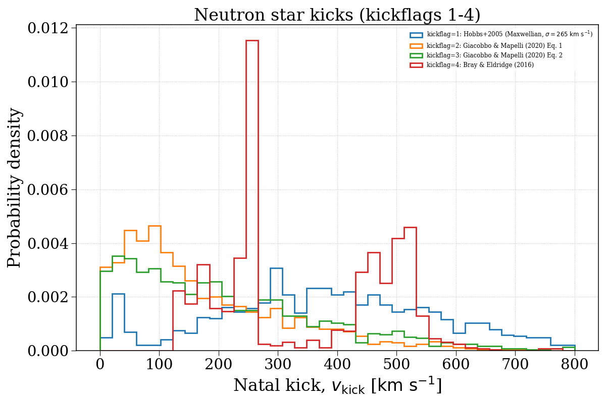
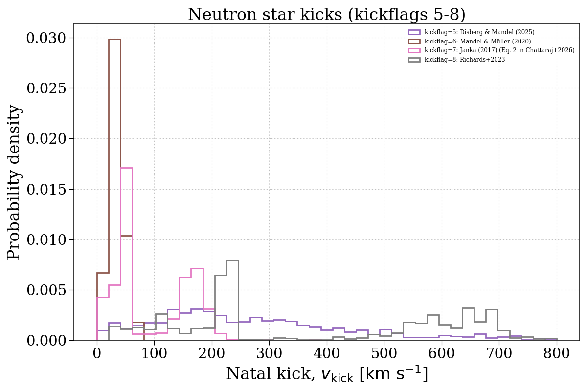
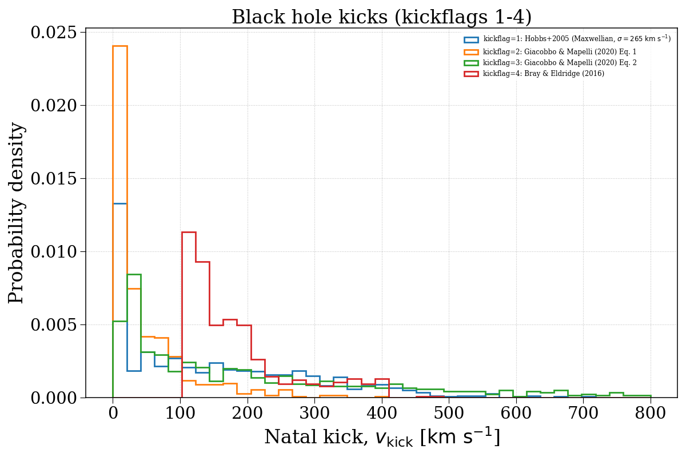
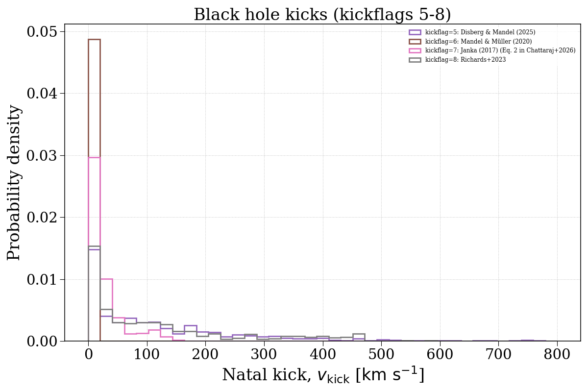

Note
Go to the end to download the full example code.
kickflag¶
This example demonstrates how changing the kickflag parameter can affect the natal kick velocity distributions of compact objects. We separate this into neutron stars and black holes.




Evolving population with kickflag = 1...
Evolving: 0%| | 0/2002 [00:00<?, ?sys/s]
Evolving: 2%|▏ | 32/2002 [00:00<00:07, 275.77sys/s]
Evolving: 3%|▎ | 60/2002 [00:00<00:17, 107.96sys/s]
Evolving: 4%|▍ | 85/2002 [00:00<00:13, 141.05sys/s]
Evolving: 5%|▌ | 105/2002 [00:00<00:13, 135.90sys/s]
Evolving: 6%|▌ | 122/2002 [00:00<00:14, 132.30sys/s]
Evolving: 7%|▋ | 138/2002 [00:01<00:14, 128.60sys/s]
Evolving: 8%|▊ | 153/2002 [00:01<00:14, 124.39sys/s]
Evolving: 8%|▊ | 167/2002 [00:01<00:14, 123.78sys/s]
Evolving: 9%|▉ | 180/2002 [00:01<00:20, 87.94sys/s]
Evolving: 10%|▉ | 191/2002 [00:01<00:20, 87.66sys/s]
Evolving: 11%|█ | 213/2002 [00:01<00:20, 86.84sys/s]
Evolving: 12%|█▏ | 240/2002 [00:02<00:15, 114.51sys/s]
Evolving: 13%|█▎ | 253/2002 [00:02<00:17, 99.68sys/s]
Evolving: 13%|█▎ | 269/2002 [00:02<00:16, 107.45sys/s]
Evolving: 14%|█▍ | 289/2002 [00:02<00:18, 93.23sys/s]
Evolving: 16%|█▌ | 321/2002 [00:02<00:12, 132.66sys/s]
Evolving: 17%|█▋ | 338/2002 [00:02<00:12, 138.14sys/s]
Evolving: 18%|█▊ | 355/2002 [00:03<00:12, 129.09sys/s]
Evolving: 18%|█▊ | 370/2002 [00:03<00:12, 132.59sys/s]
Evolving: 19%|█▉ | 385/2002 [00:03<00:12, 134.48sys/s]
Evolving: 20%|█▉ | 400/2002 [00:03<00:12, 131.72sys/s]
Evolving: 21%|██ | 414/2002 [00:03<00:17, 89.68sys/s]
Evolving: 22%|██▏ | 444/2002 [00:03<00:12, 129.22sys/s]
Evolving: 23%|██▎ | 461/2002 [00:03<00:11, 135.59sys/s]
Evolving: 24%|██▍ | 478/2002 [00:03<00:11, 130.00sys/s]
Evolving: 25%|██▍ | 493/2002 [00:04<00:11, 131.40sys/s]
Evolving: 25%|██▌ | 508/2002 [00:04<00:12, 122.65sys/s]
Evolving: 26%|██▋ | 526/2002 [00:04<00:10, 134.55sys/s]
Evolving: 27%|██▋ | 541/2002 [00:04<00:15, 96.86sys/s]
Evolving: 28%|██▊ | 565/2002 [00:04<00:11, 120.70sys/s]
Evolving: 29%|██▉ | 580/2002 [00:04<00:14, 96.90sys/s]
Evolving: 30%|██▉ | 597/2002 [00:05<00:15, 93.60sys/s]
Evolving: 31%|███ | 619/2002 [00:05<00:12, 112.26sys/s]
Evolving: 32%|███▏ | 632/2002 [00:05<00:13, 99.67sys/s]
Evolving: 32%|███▏ | 647/2002 [00:05<00:15, 85.72sys/s]
Evolving: 34%|███▎ | 675/2002 [00:05<00:11, 120.44sys/s]
Evolving: 34%|███▍ | 690/2002 [00:05<00:11, 114.96sys/s]
Evolving: 35%|███▌ | 705/2002 [00:06<00:11, 117.06sys/s]
Evolving: 36%|███▌ | 719/2002 [00:06<00:12, 105.52sys/s]
Evolving: 37%|███▋ | 739/2002 [00:06<00:11, 106.96sys/s]
Evolving: 38%|███▊ | 755/2002 [00:06<00:13, 93.21sys/s]
Evolving: 39%|███▉ | 785/2002 [00:06<00:09, 129.47sys/s]
Evolving: 40%|████ | 801/2002 [00:06<00:09, 124.68sys/s]
Evolving: 41%|████ | 815/2002 [00:07<00:12, 94.48sys/s]
Evolving: 42%|████▏ | 843/2002 [00:07<00:11, 101.06sys/s]
Evolving: 44%|████▎ | 871/2002 [00:07<00:08, 131.25sys/s]
Evolving: 44%|████▍ | 888/2002 [00:07<00:08, 134.53sys/s]
Evolving: 45%|████▌ | 904/2002 [00:07<00:08, 130.51sys/s]
Evolving: 46%|████▌ | 919/2002 [00:07<00:08, 124.23sys/s]
Evolving: 47%|████▋ | 933/2002 [00:08<00:08, 124.22sys/s]
Evolving: 47%|████▋ | 947/2002 [00:08<00:12, 84.73sys/s]
Evolving: 49%|████▊ | 974/2002 [00:08<00:09, 113.02sys/s]
Evolving: 50%|████▉ | 992/2002 [00:08<00:08, 126.03sys/s]
Evolving: 50%|█████ | 1007/2002 [00:08<00:08, 115.65sys/s]
Evolving: 51%|█████ | 1021/2002 [00:08<00:08, 110.97sys/s]
Evolving: 52%|█████▏ | 1041/2002 [00:09<00:07, 125.96sys/s]
Evolving: 53%|█████▎ | 1058/2002 [00:09<00:07, 128.03sys/s]
Evolving: 54%|█████▎ | 1073/2002 [00:09<00:07, 129.18sys/s]
Evolving: 54%|█████▍ | 1088/2002 [00:09<00:06, 131.11sys/s]
Evolving: 55%|█████▌ | 1102/2002 [00:09<00:07, 124.49sys/s]
Evolving: 56%|█████▌ | 1115/2002 [00:09<00:07, 112.83sys/s]
Evolving: 56%|█████▋ | 1127/2002 [00:09<00:07, 111.62sys/s]
Evolving: 57%|█████▋ | 1139/2002 [00:09<00:09, 87.49sys/s]
Evolving: 58%|█████▊ | 1169/2002 [00:10<00:06, 130.58sys/s]
Evolving: 59%|█████▉ | 1184/2002 [00:10<00:06, 129.27sys/s]
Evolving: 60%|█████▉ | 1200/2002 [00:10<00:05, 134.17sys/s]
Evolving: 61%|██████ | 1215/2002 [00:10<00:05, 135.92sys/s]
Evolving: 61%|██████▏ | 1230/2002 [00:10<00:05, 136.36sys/s]
Evolving: 62%|██████▏ | 1245/2002 [00:10<00:05, 131.66sys/s]
Evolving: 63%|██████▎ | 1261/2002 [00:10<00:05, 132.23sys/s]
Evolving: 64%|██████▎ | 1276/2002 [00:11<00:07, 93.42sys/s]
Evolving: 65%|██████▍ | 1298/2002 [00:11<00:07, 96.27sys/s]
Evolving: 67%|██████▋ | 1333/2002 [00:11<00:04, 140.68sys/s]
Evolving: 67%|██████▋ | 1350/2002 [00:11<00:06, 107.78sys/s]
Evolving: 69%|██████▊ | 1372/2002 [00:11<00:05, 121.66sys/s]
Evolving: 69%|██████▉ | 1390/2002 [00:11<00:04, 132.28sys/s]
Evolving: 70%|███████ | 1406/2002 [00:12<00:05, 107.25sys/s]
Evolving: 71%|███████ | 1422/2002 [00:12<00:05, 115.20sys/s]
Evolving: 72%|███████▏ | 1440/2002 [00:12<00:04, 126.86sys/s]
Evolving: 73%|███████▎ | 1456/2002 [00:12<00:04, 132.30sys/s]
Evolving: 73%|███████▎ | 1471/2002 [00:12<00:04, 128.67sys/s]
Evolving: 74%|███████▍ | 1485/2002 [00:12<00:04, 128.92sys/s]
Evolving: 75%|███████▍ | 1499/2002 [00:12<00:03, 126.96sys/s]
Evolving: 76%|███████▌ | 1513/2002 [00:12<00:03, 124.03sys/s]
Evolving: 76%|███████▋ | 1528/2002 [00:13<00:03, 128.17sys/s]
Evolving: 77%|███████▋ | 1542/2002 [00:13<00:03, 131.26sys/s]
Evolving: 78%|███████▊ | 1557/2002 [00:13<00:03, 133.77sys/s]
Evolving: 78%|███████▊ | 1571/2002 [00:13<00:03, 127.53sys/s]
Evolving: 79%|███████▉ | 1589/2002 [00:13<00:03, 133.20sys/s]
Evolving: 80%|████████ | 1603/2002 [00:13<00:03, 129.17sys/s]
Evolving: 81%|████████ | 1616/2002 [00:13<00:03, 117.73sys/s]
Evolving: 82%|████████▏ | 1633/2002 [00:14<00:04, 83.86sys/s]
Evolving: 83%|████████▎ | 1667/2002 [00:14<00:03, 108.29sys/s]
Evolving: 85%|████████▍ | 1694/2002 [00:14<00:02, 124.14sys/s]
Evolving: 86%|████████▌ | 1715/2002 [00:14<00:02, 140.13sys/s]
Evolving: 86%|████████▋ | 1731/2002 [00:14<00:02, 114.28sys/s]
Evolving: 87%|████████▋ | 1744/2002 [00:14<00:02, 98.22sys/s]
Evolving: 88%|████████▊ | 1771/2002 [00:15<00:01, 127.39sys/s]
Evolving: 89%|████████▉ | 1786/2002 [00:15<00:01, 115.53sys/s]
Evolving: 90%|█████████ | 1805/2002 [00:15<00:01, 125.70sys/s]
Evolving: 91%|█████████ | 1820/2002 [00:15<00:01, 127.44sys/s]
Evolving: 92%|█████████▏| 1834/2002 [00:15<00:01, 97.34sys/s]
Evolving: 93%|█████████▎| 1859/2002 [00:15<00:01, 126.37sys/s]
Evolving: 94%|█████████▎| 1874/2002 [00:15<00:01, 124.79sys/s]
Evolving: 94%|█████████▍| 1889/2002 [00:16<00:00, 118.85sys/s]
Evolving: 95%|█████████▌| 1904/2002 [00:16<00:00, 113.10sys/s]
Evolving: 96%|█████████▌| 1922/2002 [00:16<00:00, 121.75sys/s]
Evolving: 97%|█████████▋| 1940/2002 [00:16<00:00, 129.68sys/s]
Evolving: 98%|█████████▊| 1954/2002 [00:16<00:00, 107.76sys/s]
Evolving: 99%|█████████▊| 1973/2002 [00:16<00:00, 122.93sys/s]
Evolving: 99%|█████████▉| 1987/2002 [00:16<00:00, 103.91sys/s]
Evolving: 100%|██████████| 2002/2002 [00:16<00:00, 117.77sys/s]
[Time taken: 17.3292 seconds]
Evolving population with kickflag = 2...
Evolving: 0%| | 0/2002 [00:00<?, ?sys/s]
Evolving: 1%| | 11/2002 [00:00<00:19, 100.06sys/s]
Evolving: 1%| | 24/2002 [00:00<00:17, 112.95sys/s]
Evolving: 2%|▏ | 37/2002 [00:00<00:19, 102.95sys/s]
Evolving: 3%|▎ | 56/2002 [00:00<00:14, 131.32sys/s]
Evolving: 3%|▎ | 70/2002 [00:00<00:18, 102.09sys/s]
Evolving: 4%|▍ | 84/2002 [00:00<00:17, 109.36sys/s]
Evolving: 5%|▍ | 96/2002 [00:00<00:18, 101.90sys/s]
Evolving: 6%|▌ | 113/2002 [00:01<00:17, 107.95sys/s]
Evolving: 7%|▋ | 132/2002 [00:01<00:14, 128.19sys/s]
Evolving: 7%|▋ | 147/2002 [00:01<00:14, 128.58sys/s]
Evolving: 8%|▊ | 162/2002 [00:01<00:14, 131.04sys/s]
Evolving: 9%|▉ | 176/2002 [00:01<00:15, 120.20sys/s]
Evolving: 9%|▉ | 189/2002 [00:01<00:21, 84.10sys/s]
Evolving: 11%|█ | 213/2002 [00:02<00:20, 88.26sys/s]
Evolving: 12%|█▏ | 240/2002 [00:02<00:15, 112.97sys/s]
Evolving: 13%|█▎ | 253/2002 [00:02<00:17, 100.30sys/s]
Evolving: 13%|█▎ | 269/2002 [00:02<00:16, 104.83sys/s]
Evolving: 14%|█▍ | 289/2002 [00:02<00:18, 92.14sys/s]
Evolving: 16%|█▌ | 323/2002 [00:02<00:12, 135.42sys/s]
Evolving: 17%|█▋ | 340/2002 [00:03<00:12, 133.02sys/s]
Evolving: 18%|█▊ | 356/2002 [00:03<00:12, 130.68sys/s]
Evolving: 19%|█▊ | 371/2002 [00:03<00:12, 130.31sys/s]
Evolving: 19%|█▉ | 386/2002 [00:03<00:12, 133.74sys/s]
Evolving: 20%|██ | 401/2002 [00:03<00:11, 133.93sys/s]
Evolving: 21%|██ | 415/2002 [00:03<00:17, 89.05sys/s]
Evolving: 22%|██▏ | 447/2002 [00:03<00:12, 120.20sys/s]
Evolving: 23%|██▎ | 466/2002 [00:04<00:11, 132.31sys/s]
Evolving: 24%|██▍ | 482/2002 [00:04<00:11, 132.26sys/s]
Evolving: 25%|██▍ | 498/2002 [00:04<00:11, 134.38sys/s]
Evolving: 26%|██▌ | 513/2002 [00:04<00:12, 119.63sys/s]
Evolving: 26%|██▋ | 530/2002 [00:04<00:16, 90.35sys/s]
Evolving: 28%|██▊ | 556/2002 [00:04<00:12, 119.51sys/s]
Evolving: 29%|██▉ | 576/2002 [00:04<00:11, 122.44sys/s]
Evolving: 30%|██▉ | 591/2002 [00:05<00:12, 109.45sys/s]
Evolving: 30%|███ | 604/2002 [00:05<00:14, 94.98sys/s]
Evolving: 31%|███ | 622/2002 [00:05<00:16, 82.52sys/s]
Evolving: 32%|███▏ | 647/2002 [00:05<00:15, 89.95sys/s]
Evolving: 34%|███▍ | 678/2002 [00:06<00:11, 114.92sys/s]
Evolving: 35%|███▍ | 697/2002 [00:06<00:10, 121.90sys/s]
Evolving: 36%|███▌ | 711/2002 [00:06<00:10, 123.09sys/s]
Evolving: 36%|███▌ | 725/2002 [00:06<00:10, 121.26sys/s]
Evolving: 37%|███▋ | 739/2002 [00:06<00:11, 106.11sys/s]
Evolving: 38%|███▊ | 755/2002 [00:06<00:13, 94.27sys/s]
Evolving: 39%|███▉ | 785/2002 [00:06<00:09, 133.74sys/s]
Evolving: 40%|████ | 801/2002 [00:07<00:09, 125.19sys/s]
Evolving: 41%|████ | 816/2002 [00:07<00:12, 98.13sys/s]
Evolving: 42%|████▏ | 843/2002 [00:07<00:11, 101.83sys/s]
Evolving: 44%|████▎ | 871/2002 [00:07<00:08, 127.48sys/s]
Evolving: 44%|████▍ | 889/2002 [00:07<00:08, 136.57sys/s]
Evolving: 45%|████▌ | 905/2002 [00:07<00:08, 136.98sys/s]
Evolving: 46%|████▌ | 921/2002 [00:08<00:09, 120.02sys/s]
Evolving: 47%|████▋ | 939/2002 [00:08<00:12, 87.27sys/s]
Evolving: 49%|████▊ | 971/2002 [00:08<00:08, 124.61sys/s]
Evolving: 49%|████▉ | 988/2002 [00:08<00:07, 127.43sys/s]
Evolving: 50%|█████ | 1004/2002 [00:08<00:07, 130.12sys/s]
Evolving: 51%|█████ | 1020/2002 [00:08<00:08, 110.08sys/s]
Evolving: 52%|█████▏ | 1041/2002 [00:09<00:07, 129.21sys/s]
Evolving: 53%|█████▎ | 1057/2002 [00:09<00:07, 128.07sys/s]
Evolving: 54%|█████▎ | 1072/2002 [00:09<00:06, 133.03sys/s]
Evolving: 54%|█████▍ | 1087/2002 [00:09<00:06, 131.37sys/s]
Evolving: 55%|█████▍ | 1101/2002 [00:09<00:07, 127.91sys/s]
Evolving: 56%|█████▌ | 1115/2002 [00:09<00:08, 109.84sys/s]
Evolving: 57%|█████▋ | 1135/2002 [00:09<00:06, 130.94sys/s]
Evolving: 57%|█████▋ | 1150/2002 [00:10<00:08, 105.19sys/s]
Evolving: 58%|█████▊ | 1170/2002 [00:10<00:07, 116.06sys/s]
Evolving: 59%|█████▉ | 1190/2002 [00:10<00:06, 133.21sys/s]
Evolving: 60%|██████ | 1205/2002 [00:10<00:05, 133.85sys/s]
Evolving: 61%|██████ | 1220/2002 [00:10<00:05, 131.90sys/s]
Evolving: 62%|██████▏ | 1235/2002 [00:10<00:05, 135.78sys/s]
Evolving: 62%|██████▏ | 1250/2002 [00:10<00:05, 133.96sys/s]
Evolving: 63%|██████▎ | 1264/2002 [00:10<00:05, 129.00sys/s]
Evolving: 64%|██████▍ | 1278/2002 [00:11<00:07, 97.00sys/s]
Evolving: 65%|██████▍ | 1298/2002 [00:11<00:06, 101.41sys/s]
Evolving: 66%|██████▋ | 1327/2002 [00:11<00:04, 135.31sys/s]
Evolving: 67%|██████▋ | 1343/2002 [00:11<00:04, 137.81sys/s]
Evolving: 68%|██████▊ | 1358/2002 [00:11<00:05, 113.60sys/s]
Evolving: 69%|██████▊ | 1373/2002 [00:11<00:05, 121.24sys/s]
Evolving: 69%|██████▉ | 1387/2002 [00:11<00:04, 124.72sys/s]
Evolving: 70%|██████▉ | 1401/2002 [00:12<00:06, 97.20sys/s]
Evolving: 71%|███████ | 1422/2002 [00:12<00:05, 114.30sys/s]
Evolving: 72%|███████▏ | 1441/2002 [00:12<00:04, 130.64sys/s]
Evolving: 73%|███████▎ | 1456/2002 [00:12<00:04, 135.24sys/s]
Evolving: 73%|███████▎ | 1471/2002 [00:12<00:04, 124.49sys/s]
Evolving: 74%|███████▍ | 1485/2002 [00:12<00:04, 126.39sys/s]
Evolving: 75%|███████▍ | 1499/2002 [00:12<00:03, 128.47sys/s]
Evolving: 76%|███████▌ | 1513/2002 [00:12<00:03, 127.04sys/s]
Evolving: 76%|███████▋ | 1528/2002 [00:13<00:03, 127.85sys/s]
Evolving: 77%|███████▋ | 1545/2002 [00:13<00:03, 138.42sys/s]
Evolving: 78%|███████▊ | 1560/2002 [00:13<00:03, 131.36sys/s]
Evolving: 79%|███████▊ | 1575/2002 [00:13<00:03, 133.15sys/s]
Evolving: 80%|███████▉ | 1592/2002 [00:13<00:03, 136.46sys/s]
Evolving: 80%|████████ | 1606/2002 [00:13<00:02, 135.42sys/s]
Evolving: 81%|████████ | 1620/2002 [00:13<00:02, 130.84sys/s]
Evolving: 82%|████████▏ | 1634/2002 [00:14<00:04, 83.80sys/s]
Evolving: 83%|████████▎ | 1667/2002 [00:14<00:03, 105.36sys/s]
Evolving: 85%|████████▍ | 1694/2002 [00:14<00:02, 124.40sys/s]
Evolving: 85%|████████▌ | 1710/2002 [00:14<00:02, 130.35sys/s]
Evolving: 86%|████████▌ | 1725/2002 [00:14<00:02, 102.37sys/s]
Evolving: 87%|████████▋ | 1740/2002 [00:14<00:02, 95.07sys/s]
Evolving: 89%|████████▊ | 1774/2002 [00:15<00:01, 136.35sys/s]
Evolving: 89%|████████▉ | 1791/2002 [00:15<00:01, 130.12sys/s]
Evolving: 90%|█████████ | 1806/2002 [00:15<00:01, 130.11sys/s]
Evolving: 91%|█████████ | 1821/2002 [00:15<00:01, 120.33sys/s]
Evolving: 92%|█████████▏| 1834/2002 [00:15<00:01, 97.29sys/s]
Evolving: 93%|█████████▎| 1860/2002 [00:15<00:01, 129.92sys/s]
Evolving: 94%|█████████▎| 1876/2002 [00:15<00:00, 130.57sys/s]
Evolving: 94%|█████████▍| 1891/2002 [00:16<00:00, 125.15sys/s]
Evolving: 95%|█████████▌| 1905/2002 [00:16<00:00, 111.66sys/s]
Evolving: 96%|█████████▌| 1924/2002 [00:16<00:00, 125.65sys/s]
Evolving: 97%|█████████▋| 1939/2002 [00:16<00:00, 127.24sys/s]
Evolving: 98%|█████████▊| 1953/2002 [00:16<00:00, 107.48sys/s]
Evolving: 99%|█████████▊| 1973/2002 [00:16<00:00, 127.84sys/s]
Evolving: 99%|█████████▉| 1988/2002 [00:16<00:00, 107.38sys/s]
Evolving: 100%|██████████| 2002/2002 [00:16<00:00, 117.86sys/s]
[Time taken: 17.1551 seconds]
Evolving population with kickflag = 3...
Evolving: 0%| | 0/2002 [00:00<?, ?sys/s]
Evolving: 0%| | 8/2002 [00:00<00:25, 78.88sys/s]
Evolving: 1%| | 22/2002 [00:00<00:17, 111.71sys/s]
Evolving: 2%|▏ | 36/2002 [00:00<00:15, 122.99sys/s]
Evolving: 2%|▏ | 50/2002 [00:00<00:15, 123.72sys/s]
Evolving: 3%|▎ | 63/2002 [00:00<00:22, 85.55sys/s]
Evolving: 4%|▍ | 83/2002 [00:00<00:17, 112.43sys/s]
Evolving: 5%|▍ | 96/2002 [00:00<00:17, 106.50sys/s]
Evolving: 6%|▌ | 113/2002 [00:01<00:16, 114.97sys/s]
Evolving: 7%|▋ | 132/2002 [00:01<00:14, 132.97sys/s]
Evolving: 7%|▋ | 147/2002 [00:01<00:13, 134.26sys/s]
Evolving: 8%|▊ | 162/2002 [00:01<00:13, 135.15sys/s]
Evolving: 9%|▉ | 176/2002 [00:01<00:15, 119.91sys/s]
Evolving: 9%|▉ | 189/2002 [00:01<00:22, 81.88sys/s]
Evolving: 11%|█ | 213/2002 [00:02<00:20, 87.58sys/s]
Evolving: 12%|█▏ | 240/2002 [00:02<00:15, 112.90sys/s]
Evolving: 13%|█▎ | 253/2002 [00:02<00:17, 102.85sys/s]
Evolving: 13%|█▎ | 269/2002 [00:02<00:15, 108.67sys/s]
Evolving: 14%|█▍ | 289/2002 [00:02<00:18, 92.09sys/s]
Evolving: 16%|█▌ | 322/2002 [00:02<00:12, 133.23sys/s]
Evolving: 17%|█▋ | 339/2002 [00:02<00:12, 136.25sys/s]
Evolving: 18%|█▊ | 356/2002 [00:03<00:12, 135.90sys/s]
Evolving: 19%|█▊ | 372/2002 [00:03<00:12, 130.65sys/s]
Evolving: 19%|█▉ | 387/2002 [00:03<00:12, 131.48sys/s]
Evolving: 20%|██ | 401/2002 [00:03<00:12, 131.90sys/s]
Evolving: 21%|██ | 415/2002 [00:03<00:17, 91.94sys/s]
Evolving: 22%|██▏ | 444/2002 [00:03<00:12, 127.32sys/s]
Evolving: 23%|██▎ | 460/2002 [00:03<00:11, 131.16sys/s]
Evolving: 24%|██▎ | 475/2002 [00:04<00:11, 131.94sys/s]
Evolving: 24%|██▍ | 490/2002 [00:04<00:11, 133.25sys/s]
Evolving: 25%|██▌ | 505/2002 [00:04<00:11, 132.32sys/s]
Evolving: 26%|██▌ | 519/2002 [00:04<00:11, 131.92sys/s]
Evolving: 27%|██▋ | 533/2002 [00:04<00:16, 87.66sys/s]
Evolving: 28%|██▊ | 556/2002 [00:04<00:12, 114.22sys/s]
Evolving: 29%|██▊ | 574/2002 [00:04<00:11, 127.60sys/s]
Evolving: 29%|██▉ | 590/2002 [00:05<00:12, 110.75sys/s]
Evolving: 30%|███ | 604/2002 [00:05<00:15, 92.87sys/s]
Evolving: 31%|███ | 622/2002 [00:05<00:16, 82.04sys/s]
Evolving: 32%|███▏ | 647/2002 [00:05<00:14, 92.20sys/s]
Evolving: 34%|███▍ | 677/2002 [00:05<00:10, 122.25sys/s]
Evolving: 35%|███▍ | 692/2002 [00:06<00:10, 125.01sys/s]
Evolving: 35%|███▌ | 707/2002 [00:06<00:11, 110.02sys/s]
Evolving: 36%|███▋ | 726/2002 [00:06<00:10, 123.29sys/s]
Evolving: 37%|███▋ | 740/2002 [00:06<00:11, 110.35sys/s]
Evolving: 38%|███▊ | 755/2002 [00:06<00:13, 90.79sys/s]
Evolving: 39%|███▉ | 790/2002 [00:06<00:08, 137.05sys/s]
Evolving: 40%|████ | 807/2002 [00:07<00:08, 136.17sys/s]
Evolving: 41%|████ | 823/2002 [00:07<00:10, 108.86sys/s]
Evolving: 42%|████▏ | 843/2002 [00:07<00:12, 94.60sys/s]
Evolving: 44%|████▎ | 875/2002 [00:07<00:08, 132.06sys/s]
Evolving: 45%|████▍ | 892/2002 [00:07<00:09, 122.53sys/s]
Evolving: 46%|████▌ | 913/2002 [00:07<00:07, 139.00sys/s]
Evolving: 46%|████▋ | 930/2002 [00:08<00:08, 131.12sys/s]
Evolving: 47%|████▋ | 945/2002 [00:08<00:11, 94.75sys/s]
Evolving: 48%|████▊ | 967/2002 [00:08<00:08, 117.24sys/s]
Evolving: 49%|████▉ | 982/2002 [00:08<00:08, 122.88sys/s]
Evolving: 50%|████▉ | 997/2002 [00:08<00:07, 128.28sys/s]
Evolving: 51%|█████ | 1012/2002 [00:08<00:08, 121.26sys/s]
Evolving: 51%|█████ | 1026/2002 [00:08<00:08, 113.58sys/s]
Evolving: 52%|█████▏ | 1044/2002 [00:09<00:07, 124.97sys/s]
Evolving: 53%|█████▎ | 1059/2002 [00:09<00:07, 126.53sys/s]
Evolving: 54%|█████▎ | 1075/2002 [00:09<00:07, 129.80sys/s]
Evolving: 54%|█████▍ | 1091/2002 [00:09<00:06, 133.08sys/s]
Evolving: 55%|█████▌ | 1105/2002 [00:09<00:07, 125.81sys/s]
Evolving: 56%|█████▌ | 1118/2002 [00:09<00:07, 116.00sys/s]
Evolving: 57%|█████▋ | 1134/2002 [00:09<00:07, 121.86sys/s]
Evolving: 57%|█████▋ | 1147/2002 [00:09<00:08, 100.05sys/s]
Evolving: 58%|█████▊ | 1167/2002 [00:10<00:06, 122.68sys/s]
Evolving: 59%|█████▉ | 1182/2002 [00:10<00:06, 126.14sys/s]
Evolving: 60%|█████▉ | 1198/2002 [00:10<00:05, 134.61sys/s]
Evolving: 61%|██████ | 1213/2002 [00:10<00:05, 133.49sys/s]
Evolving: 61%|██████▏ | 1227/2002 [00:10<00:05, 135.05sys/s]
Evolving: 62%|██████▏ | 1241/2002 [00:10<00:05, 129.37sys/s]
Evolving: 63%|██████▎ | 1257/2002 [00:10<00:05, 131.42sys/s]
Evolving: 64%|██████▎ | 1273/2002 [00:10<00:05, 135.52sys/s]
Evolving: 64%|██████▍ | 1287/2002 [00:11<00:06, 111.15sys/s]
Evolving: 65%|██████▍ | 1299/2002 [00:11<00:07, 93.06sys/s]
Evolving: 66%|██████▋ | 1330/2002 [00:11<00:04, 136.40sys/s]
Evolving: 67%|██████▋ | 1346/2002 [00:11<00:06, 108.12sys/s]
Evolving: 68%|██████▊ | 1363/2002 [00:11<00:05, 120.43sys/s]
Evolving: 69%|██████▉ | 1378/2002 [00:11<00:05, 123.98sys/s]
Evolving: 70%|██████▉ | 1394/2002 [00:11<00:04, 130.74sys/s]
Evolving: 70%|███████ | 1409/2002 [00:12<00:05, 109.79sys/s]
Evolving: 71%|███████ | 1422/2002 [00:12<00:05, 111.57sys/s]
Evolving: 72%|███████▏ | 1441/2002 [00:12<00:04, 127.32sys/s]
Evolving: 73%|███████▎ | 1456/2002 [00:12<00:04, 132.05sys/s]
Evolving: 73%|███████▎ | 1470/2002 [00:12<00:04, 124.20sys/s]
Evolving: 74%|███████▍ | 1483/2002 [00:12<00:04, 125.52sys/s]
Evolving: 75%|███████▍ | 1496/2002 [00:12<00:04, 124.67sys/s]
Evolving: 75%|███████▌ | 1510/2002 [00:12<00:04, 122.80sys/s]
Evolving: 76%|███████▌ | 1526/2002 [00:12<00:03, 132.69sys/s]
Evolving: 77%|███████▋ | 1540/2002 [00:13<00:03, 132.48sys/s]
Evolving: 78%|███████▊ | 1554/2002 [00:13<00:03, 129.46sys/s]
Evolving: 79%|███████▊ | 1572/2002 [00:13<00:03, 140.03sys/s]
Evolving: 79%|███████▉ | 1587/2002 [00:13<00:03, 130.84sys/s]
Evolving: 80%|███████▉ | 1601/2002 [00:13<00:03, 123.02sys/s]
Evolving: 81%|████████ | 1616/2002 [00:13<00:02, 129.76sys/s]
Evolving: 82%|████████▏ | 1633/2002 [00:13<00:04, 88.20sys/s]
Evolving: 83%|████████▎ | 1667/2002 [00:14<00:03, 107.86sys/s]
Evolving: 85%|████████▍ | 1694/2002 [00:14<00:02, 125.48sys/s]
Evolving: 86%|████████▌ | 1712/2002 [00:14<00:02, 131.20sys/s]
Evolving: 86%|████████▋ | 1727/2002 [00:14<00:02, 108.75sys/s]
Evolving: 87%|████████▋ | 1740/2002 [00:14<00:02, 94.75sys/s]
Evolving: 88%|████████▊ | 1771/2002 [00:14<00:01, 134.92sys/s]
Evolving: 89%|████████▉ | 1788/2002 [00:15<00:01, 120.14sys/s]
Evolving: 90%|█████████ | 1807/2002 [00:15<00:01, 132.12sys/s]
Evolving: 91%|█████████ | 1823/2002 [00:15<00:01, 127.44sys/s]
Evolving: 92%|█████████▏| 1838/2002 [00:15<00:01, 104.78sys/s]
Evolving: 93%|█████████▎| 1858/2002 [00:15<00:01, 123.14sys/s]
Evolving: 94%|█████████▎| 1873/2002 [00:15<00:01, 124.34sys/s]
Evolving: 94%|█████████▍| 1887/2002 [00:15<00:00, 121.91sys/s]
Evolving: 95%|█████████▌| 1902/2002 [00:16<00:00, 127.09sys/s]
Evolving: 96%|█████████▌| 1916/2002 [00:16<00:00, 120.24sys/s]
Evolving: 96%|█████████▋| 1930/2002 [00:16<00:00, 124.40sys/s]
Evolving: 97%|█████████▋| 1943/2002 [00:16<00:00, 88.08sys/s]
Evolving: 99%|█████████▊| 1973/2002 [00:16<00:00, 131.15sys/s]
Evolving: 99%|█████████▉| 1990/2002 [00:16<00:00, 116.43sys/s]
Evolving: 100%|██████████| 2002/2002 [00:16<00:00, 118.35sys/s]
[Time taken: 17.0881 seconds]
Evolving population with kickflag = 4...
Evolving: 0%| | 0/2002 [00:00<?, ?sys/s]
Evolving: 0%| | 8/2002 [00:00<00:27, 71.52sys/s]
Evolving: 1%| | 22/2002 [00:00<00:18, 104.78sys/s]
Evolving: 2%|▏ | 37/2002 [00:00<00:18, 104.61sys/s]
Evolving: 3%|▎ | 57/2002 [00:00<00:22, 87.45sys/s]
Evolving: 4%|▍ | 83/2002 [00:00<00:15, 127.75sys/s]
Evolving: 5%|▍ | 99/2002 [00:00<00:16, 115.85sys/s]
Evolving: 6%|▌ | 113/2002 [00:01<00:15, 120.53sys/s]
Evolving: 6%|▋ | 130/2002 [00:01<00:14, 129.48sys/s]
Evolving: 7%|▋ | 146/2002 [00:01<00:14, 131.81sys/s]
Evolving: 8%|▊ | 161/2002 [00:01<00:13, 133.48sys/s]
Evolving: 9%|▉ | 176/2002 [00:01<00:15, 120.23sys/s]
Evolving: 9%|▉ | 189/2002 [00:01<00:21, 84.66sys/s]
Evolving: 11%|█ | 213/2002 [00:02<00:19, 91.69sys/s]
Evolving: 12%|█▏ | 240/2002 [00:02<00:15, 114.92sys/s]
Evolving: 13%|█▎ | 253/2002 [00:02<00:16, 106.83sys/s]
Evolving: 13%|█▎ | 269/2002 [00:02<00:15, 110.55sys/s]
Evolving: 14%|█▍ | 289/2002 [00:02<00:18, 93.31sys/s]
Evolving: 16%|█▌ | 321/2002 [00:02<00:12, 132.08sys/s]
Evolving: 17%|█▋ | 338/2002 [00:02<00:12, 138.55sys/s]
Evolving: 18%|█▊ | 355/2002 [00:03<00:12, 132.39sys/s]
Evolving: 18%|█▊ | 370/2002 [00:03<00:12, 132.64sys/s]
Evolving: 19%|█▉ | 385/2002 [00:03<00:11, 135.53sys/s]
Evolving: 20%|█▉ | 400/2002 [00:03<00:12, 132.24sys/s]
Evolving: 21%|██ | 414/2002 [00:03<00:17, 91.17sys/s]
Evolving: 22%|██▏ | 446/2002 [00:03<00:11, 134.19sys/s]
Evolving: 23%|██▎ | 463/2002 [00:03<00:11, 130.80sys/s]
Evolving: 24%|██▍ | 479/2002 [00:04<00:11, 135.13sys/s]
Evolving: 25%|██▍ | 495/2002 [00:04<00:11, 136.02sys/s]
Evolving: 25%|██▌ | 510/2002 [00:04<00:11, 128.43sys/s]
Evolving: 26%|██▌ | 524/2002 [00:04<00:11, 127.10sys/s]
Evolving: 27%|██▋ | 538/2002 [00:04<00:15, 96.80sys/s]
Evolving: 28%|██▊ | 556/2002 [00:04<00:12, 113.50sys/s]
Evolving: 29%|██▊ | 575/2002 [00:04<00:11, 124.78sys/s]
Evolving: 29%|██▉ | 589/2002 [00:05<00:12, 111.59sys/s]
Evolving: 30%|███ | 602/2002 [00:05<00:15, 90.91sys/s]
Evolving: 31%|███ | 622/2002 [00:05<00:16, 84.74sys/s]
Evolving: 32%|███▏ | 647/2002 [00:05<00:14, 93.21sys/s]
Evolving: 34%|███▍ | 678/2002 [00:05<00:11, 118.27sys/s]
Evolving: 35%|███▍ | 693/2002 [00:06<00:10, 121.21sys/s]
Evolving: 35%|███▌ | 707/2002 [00:06<00:11, 116.73sys/s]
Evolving: 36%|███▌ | 720/2002 [00:06<00:10, 116.74sys/s]
Evolving: 37%|███▋ | 739/2002 [00:06<00:11, 113.93sys/s]
Evolving: 38%|███▊ | 755/2002 [00:06<00:13, 95.81sys/s]
Evolving: 39%|███▉ | 788/2002 [00:06<00:08, 137.31sys/s]
Evolving: 40%|████ | 804/2002 [00:06<00:09, 128.11sys/s]
Evolving: 41%|████ | 819/2002 [00:07<00:11, 100.06sys/s]
Evolving: 42%|████▏ | 843/2002 [00:07<00:11, 100.31sys/s]
Evolving: 44%|████▎ | 871/2002 [00:07<00:08, 129.80sys/s]
Evolving: 44%|████▍ | 888/2002 [00:07<00:08, 137.29sys/s]
Evolving: 45%|████▌ | 904/2002 [00:07<00:08, 135.64sys/s]
Evolving: 46%|████▌ | 920/2002 [00:07<00:09, 118.61sys/s]
Evolving: 47%|████▋ | 939/2002 [00:08<00:10, 97.65sys/s]
Evolving: 48%|████▊ | 965/2002 [00:08<00:08, 127.19sys/s]
Evolving: 49%|████▉ | 981/2002 [00:08<00:08, 125.56sys/s]
Evolving: 50%|████▉ | 996/2002 [00:08<00:07, 128.31sys/s]
Evolving: 50%|█████ | 1011/2002 [00:08<00:07, 128.26sys/s]
Evolving: 51%|█████ | 1025/2002 [00:08<00:07, 123.19sys/s]
Evolving: 52%|█████▏ | 1039/2002 [00:08<00:07, 126.10sys/s]
Evolving: 53%|█████▎ | 1053/2002 [00:09<00:07, 129.03sys/s]
Evolving: 53%|█████▎ | 1067/2002 [00:09<00:07, 130.73sys/s]
Evolving: 54%|█████▍ | 1081/2002 [00:09<00:06, 132.18sys/s]
Evolving: 55%|█████▍ | 1095/2002 [00:09<00:07, 126.52sys/s]
Evolving: 55%|█████▌ | 1108/2002 [00:09<00:07, 125.12sys/s]
Evolving: 56%|█████▌ | 1121/2002 [00:09<00:07, 124.18sys/s]
Evolving: 57%|█████▋ | 1134/2002 [00:09<00:07, 121.93sys/s]
Evolving: 57%|█████▋ | 1147/2002 [00:09<00:08, 96.48sys/s]
Evolving: 58%|█████▊ | 1169/2002 [00:09<00:06, 124.80sys/s]
Evolving: 59%|█████▉ | 1183/2002 [00:10<00:06, 125.67sys/s]
Evolving: 60%|█████▉ | 1198/2002 [00:10<00:06, 129.12sys/s]
Evolving: 61%|██████ | 1212/2002 [00:10<00:06, 130.66sys/s]
Evolving: 61%|██████▏ | 1229/2002 [00:10<00:05, 136.12sys/s]
Evolving: 62%|██████▏ | 1243/2002 [00:10<00:05, 134.19sys/s]
Evolving: 63%|██████▎ | 1257/2002 [00:10<00:05, 133.77sys/s]
Evolving: 63%|██████▎ | 1271/2002 [00:10<00:05, 135.26sys/s]
Evolving: 64%|██████▍ | 1285/2002 [00:10<00:06, 107.59sys/s]
Evolving: 65%|██████▍ | 1298/2002 [00:11<00:07, 92.37sys/s]
Evolving: 66%|██████▌ | 1325/2002 [00:11<00:05, 131.19sys/s]
Evolving: 67%|██████▋ | 1341/2002 [00:11<00:04, 134.98sys/s]
Evolving: 68%|██████▊ | 1356/2002 [00:11<00:06, 107.20sys/s]
Evolving: 68%|██████▊ | 1370/2002 [00:11<00:05, 114.14sys/s]
Evolving: 69%|██████▉ | 1387/2002 [00:11<00:04, 125.98sys/s]
Evolving: 70%|██████▉ | 1401/2002 [00:11<00:06, 95.34sys/s]
Evolving: 71%|███████ | 1422/2002 [00:12<00:05, 115.12sys/s]
Evolving: 72%|███████▏ | 1443/2002 [00:12<00:04, 134.99sys/s]
Evolving: 73%|███████▎ | 1459/2002 [00:12<00:04, 131.31sys/s]
Evolving: 74%|███████▎ | 1474/2002 [00:12<00:03, 132.94sys/s]
Evolving: 74%|███████▍ | 1489/2002 [00:12<00:03, 133.92sys/s]
Evolving: 75%|███████▌ | 1504/2002 [00:12<00:03, 126.24sys/s]
Evolving: 76%|███████▌ | 1518/2002 [00:12<00:03, 129.20sys/s]
Evolving: 77%|███████▋ | 1532/2002 [00:12<00:03, 131.83sys/s]
Evolving: 77%|███████▋ | 1546/2002 [00:13<00:03, 130.27sys/s]
Evolving: 78%|███████▊ | 1562/2002 [00:13<00:03, 133.19sys/s]
Evolving: 79%|███████▉ | 1578/2002 [00:13<00:03, 137.82sys/s]
Evolving: 80%|███████▉ | 1592/2002 [00:13<00:03, 134.37sys/s]
Evolving: 80%|████████ | 1606/2002 [00:13<00:03, 128.02sys/s]
Evolving: 81%|████████ | 1621/2002 [00:13<00:02, 127.10sys/s]
Evolving: 82%|████████▏ | 1634/2002 [00:13<00:04, 84.38sys/s]
Evolving: 83%|████████▎ | 1667/2002 [00:14<00:03, 106.15sys/s]
Evolving: 85%|████████▍ | 1694/2002 [00:14<00:02, 126.79sys/s]
Evolving: 86%|████████▌ | 1714/2002 [00:14<00:02, 134.61sys/s]
Evolving: 86%|████████▋ | 1729/2002 [00:14<00:02, 112.02sys/s]
Evolving: 87%|████████▋ | 1742/2002 [00:14<00:02, 96.64sys/s]
Evolving: 88%|████████▊ | 1771/2002 [00:14<00:01, 130.79sys/s]
Evolving: 89%|████████▉ | 1787/2002 [00:15<00:01, 116.46sys/s]
Evolving: 90%|█████████ | 1807/2002 [00:15<00:01, 123.01sys/s]
Evolving: 91%|█████████ | 1821/2002 [00:15<00:01, 121.94sys/s]
Evolving: 92%|█████████▏| 1835/2002 [00:15<00:01, 98.02sys/s]
Evolving: 93%|█████████▎| 1862/2002 [00:15<00:01, 130.54sys/s]
Evolving: 94%|█████████▍| 1878/2002 [00:15<00:01, 118.37sys/s]
Evolving: 95%|█████████▍| 1897/2002 [00:15<00:00, 133.15sys/s]
Evolving: 96%|█████████▌| 1913/2002 [00:16<00:00, 124.86sys/s]
Evolving: 96%|█████████▋| 1927/2002 [00:16<00:00, 127.96sys/s]
Evolving: 97%|█████████▋| 1941/2002 [00:16<00:00, 126.85sys/s]
Evolving: 98%|█████████▊| 1955/2002 [00:16<00:00, 111.72sys/s]
Evolving: 99%|█████████▊| 1973/2002 [00:16<00:00, 120.89sys/s]
Evolving: 99%|█████████▉| 1986/2002 [00:16<00:00, 102.05sys/s]
Evolving: 100%|██████████| 2002/2002 [00:16<00:00, 119.09sys/s]
[Time taken: 16.9863 seconds]
Evolving population with kickflag = 5...
Evolving: 0%| | 0/2002 [00:00<?, ?sys/s]
Evolving: 0%| | 4/2002 [00:00<01:01, 32.23sys/s]
Evolving: 1%|▏ | 26/2002 [00:00<00:15, 126.26sys/s]
Evolving: 2%|▏ | 40/2002 [00:00<00:17, 113.37sys/s]
Evolving: 3%|▎ | 57/2002 [00:00<00:23, 81.82sys/s]
Evolving: 4%|▍ | 85/2002 [00:00<00:15, 126.18sys/s]
Evolving: 5%|▌ | 101/2002 [00:00<00:15, 121.27sys/s]
Evolving: 6%|▌ | 116/2002 [00:01<00:15, 120.09sys/s]
Evolving: 7%|▋ | 132/2002 [00:01<00:14, 128.26sys/s]
Evolving: 7%|▋ | 146/2002 [00:01<00:14, 128.01sys/s]
Evolving: 8%|▊ | 163/2002 [00:01<00:13, 133.48sys/s]
Evolving: 9%|▉ | 177/2002 [00:01<00:14, 122.02sys/s]
Evolving: 9%|▉ | 190/2002 [00:01<00:21, 83.85sys/s]
Evolving: 11%|█ | 213/2002 [00:02<00:20, 87.63sys/s]
Evolving: 12%|█▏ | 240/2002 [00:02<00:15, 112.76sys/s]
Evolving: 13%|█▎ | 253/2002 [00:02<00:17, 101.81sys/s]
Evolving: 13%|█▎ | 269/2002 [00:02<00:15, 108.41sys/s]
Evolving: 14%|█▍ | 289/2002 [00:02<00:18, 92.57sys/s]
Evolving: 16%|█▌ | 322/2002 [00:02<00:12, 133.24sys/s]
Evolving: 17%|█▋ | 339/2002 [00:02<00:12, 138.02sys/s]
Evolving: 18%|█▊ | 356/2002 [00:03<00:12, 133.58sys/s]
Evolving: 19%|█▊ | 371/2002 [00:03<00:12, 130.52sys/s]
Evolving: 19%|█▉ | 386/2002 [00:03<00:12, 131.96sys/s]
Evolving: 20%|█▉ | 400/2002 [00:03<00:12, 131.03sys/s]
Evolving: 21%|██ | 414/2002 [00:03<00:17, 88.96sys/s]
Evolving: 22%|██▏ | 446/2002 [00:03<00:11, 131.25sys/s]
Evolving: 23%|██▎ | 463/2002 [00:04<00:15, 99.35sys/s]
Evolving: 24%|██▍ | 479/2002 [00:04<00:14, 108.78sys/s]
Evolving: 25%|██▍ | 494/2002 [00:04<00:12, 116.37sys/s]
Evolving: 25%|██▌ | 508/2002 [00:04<00:13, 110.10sys/s]
Evolving: 26%|██▌ | 524/2002 [00:04<00:12, 120.94sys/s]
Evolving: 27%|██▋ | 538/2002 [00:04<00:15, 91.95sys/s]
Evolving: 28%|██▊ | 556/2002 [00:04<00:13, 109.20sys/s]
Evolving: 29%|██▊ | 575/2002 [00:05<00:11, 125.37sys/s]
Evolving: 29%|██▉ | 590/2002 [00:05<00:13, 106.95sys/s]
Evolving: 30%|███ | 603/2002 [00:05<00:16, 84.92sys/s]
Evolving: 31%|███ | 622/2002 [00:05<00:16, 84.64sys/s]
Evolving: 32%|███▏ | 647/2002 [00:05<00:14, 91.84sys/s]
Evolving: 34%|███▍ | 677/2002 [00:06<00:10, 125.11sys/s]
Evolving: 35%|███▍ | 693/2002 [00:06<00:10, 120.72sys/s]
Evolving: 35%|███▌ | 707/2002 [00:06<00:11, 112.01sys/s]
Evolving: 36%|███▌ | 720/2002 [00:06<00:11, 114.00sys/s]
Evolving: 37%|███▋ | 739/2002 [00:06<00:11, 112.28sys/s]
Evolving: 38%|███▊ | 755/2002 [00:06<00:13, 95.20sys/s]
Evolving: 39%|███▉ | 786/2002 [00:06<00:08, 136.03sys/s]
Evolving: 40%|████ | 803/2002 [00:07<00:09, 129.52sys/s]
Evolving: 41%|████ | 818/2002 [00:07<00:11, 99.91sys/s]
Evolving: 42%|████▏ | 843/2002 [00:07<00:11, 100.89sys/s]
Evolving: 44%|████▎ | 871/2002 [00:07<00:08, 130.93sys/s]
Evolving: 44%|████▍ | 888/2002 [00:07<00:08, 134.30sys/s]
Evolving: 45%|████▌ | 904/2002 [00:08<00:08, 130.48sys/s]
Evolving: 46%|████▌ | 919/2002 [00:08<00:08, 128.40sys/s]
Evolving: 47%|████▋ | 933/2002 [00:08<00:08, 128.27sys/s]
Evolving: 47%|████▋ | 947/2002 [00:08<00:12, 86.04sys/s]
Evolving: 49%|████▊ | 974/2002 [00:08<00:09, 111.07sys/s]
Evolving: 50%|████▉ | 994/2002 [00:08<00:07, 126.19sys/s]
Evolving: 50%|█████ | 1009/2002 [00:08<00:08, 119.49sys/s]
Evolving: 51%|█████ | 1023/2002 [00:09<00:08, 117.90sys/s]
Evolving: 52%|█████▏ | 1040/2002 [00:09<00:07, 125.10sys/s]
Evolving: 53%|█████▎ | 1054/2002 [00:09<00:07, 121.88sys/s]
Evolving: 54%|█████▎ | 1072/2002 [00:09<00:06, 134.23sys/s]
Evolving: 54%|█████▍ | 1087/2002 [00:09<00:06, 134.41sys/s]
Evolving: 55%|█████▍ | 1101/2002 [00:09<00:07, 125.03sys/s]
Evolving: 56%|█████▌ | 1114/2002 [00:09<00:08, 109.03sys/s]
Evolving: 57%|█████▋ | 1134/2002 [00:09<00:06, 129.13sys/s]
Evolving: 57%|█████▋ | 1148/2002 [00:10<00:08, 100.81sys/s]
Evolving: 58%|█████▊ | 1169/2002 [00:10<00:06, 122.87sys/s]
Evolving: 59%|█████▉ | 1183/2002 [00:10<00:06, 125.66sys/s]
Evolving: 60%|█████▉ | 1198/2002 [00:10<00:06, 126.33sys/s]
Evolving: 61%|██████ | 1214/2002 [00:10<00:05, 134.72sys/s]
Evolving: 61%|██████▏ | 1229/2002 [00:10<00:05, 129.70sys/s]
Evolving: 62%|██████▏ | 1243/2002 [00:10<00:05, 131.37sys/s]
Evolving: 63%|██████▎ | 1257/2002 [00:10<00:05, 131.85sys/s]
Evolving: 64%|██████▎ | 1272/2002 [00:11<00:05, 129.47sys/s]
Evolving: 64%|██████▍ | 1286/2002 [00:11<00:06, 108.92sys/s]
Evolving: 65%|██████▍ | 1298/2002 [00:11<00:07, 91.44sys/s]
Evolving: 66%|██████▋ | 1329/2002 [00:11<00:04, 138.75sys/s]
Evolving: 67%|██████▋ | 1345/2002 [00:11<00:05, 126.63sys/s]
Evolving: 68%|██████▊ | 1360/2002 [00:11<00:05, 112.75sys/s]
Evolving: 69%|██████▊ | 1376/2002 [00:11<00:05, 118.60sys/s]
Evolving: 70%|██████▉ | 1393/2002 [00:12<00:04, 128.73sys/s]
Evolving: 70%|███████ | 1407/2002 [00:12<00:05, 107.17sys/s]
Evolving: 71%|███████ | 1422/2002 [00:12<00:05, 109.11sys/s]
Evolving: 72%|███████▏ | 1443/2002 [00:12<00:04, 129.62sys/s]
Evolving: 73%|███████▎ | 1458/2002 [00:12<00:04, 133.41sys/s]
Evolving: 74%|███████▎ | 1473/2002 [00:12<00:04, 126.95sys/s]
Evolving: 74%|███████▍ | 1487/2002 [00:12<00:04, 121.64sys/s]
Evolving: 75%|███████▌ | 1503/2002 [00:12<00:04, 123.22sys/s]
Evolving: 76%|███████▌ | 1518/2002 [00:13<00:03, 122.32sys/s]
Evolving: 77%|███████▋ | 1532/2002 [00:13<00:03, 125.96sys/s]
Evolving: 77%|███████▋ | 1545/2002 [00:13<00:03, 126.48sys/s]
Evolving: 78%|███████▊ | 1561/2002 [00:13<00:03, 134.65sys/s]
Evolving: 79%|███████▊ | 1575/2002 [00:13<00:03, 132.99sys/s]
Evolving: 79%|███████▉ | 1589/2002 [00:13<00:03, 128.18sys/s]
Evolving: 80%|████████ | 1602/2002 [00:13<00:03, 123.63sys/s]
Evolving: 81%|████████ | 1616/2002 [00:13<00:03, 118.50sys/s]
Evolving: 82%|████████▏ | 1633/2002 [00:14<00:04, 86.02sys/s]
Evolving: 83%|████████▎ | 1667/2002 [00:14<00:03, 108.17sys/s]
Evolving: 85%|████████▍ | 1694/2002 [00:14<00:02, 124.05sys/s]
Evolving: 86%|████████▌ | 1714/2002 [00:14<00:02, 134.76sys/s]
Evolving: 86%|████████▋ | 1729/2002 [00:14<00:02, 113.09sys/s]
Evolving: 87%|████████▋ | 1742/2002 [00:15<00:02, 96.57sys/s]
Evolving: 88%|████████▊ | 1769/2002 [00:15<00:01, 128.99sys/s]
Evolving: 89%|████████▉ | 1785/2002 [00:15<00:01, 115.74sys/s]
Evolving: 90%|████████▉ | 1800/2002 [00:15<00:01, 122.67sys/s]
Evolving: 91%|█████████ | 1819/2002 [00:15<00:01, 136.25sys/s]
Evolving: 92%|█████████▏| 1835/2002 [00:15<00:01, 101.34sys/s]
Evolving: 93%|█████████▎| 1860/2002 [00:15<00:01, 126.99sys/s]
Evolving: 94%|█████████▎| 1876/2002 [00:16<00:01, 125.38sys/s]
Evolving: 94%|█████████▍| 1891/2002 [00:16<00:00, 123.68sys/s]
Evolving: 95%|█████████▌| 1905/2002 [00:16<00:00, 112.28sys/s]
Evolving: 96%|█████████▌| 1921/2002 [00:16<00:00, 120.58sys/s]
Evolving: 97%|█████████▋| 1936/2002 [00:16<00:00, 126.22sys/s]
Evolving: 97%|█████████▋| 1950/2002 [00:16<00:00, 99.72sys/s]
Evolving: 99%|█████████▊| 1974/2002 [00:16<00:00, 130.01sys/s]
Evolving: 99%|█████████▉| 1990/2002 [00:17<00:00, 113.51sys/s]
Evolving: 100%|██████████| 2002/2002 [00:17<00:00, 116.77sys/s]
[Time taken: 17.3247 seconds]
Evolving population with kickflag = 6...
Evolving: 0%| | 0/2002 [00:00<?, ?sys/s]
Evolving: 0%| | 4/2002 [00:00<00:54, 36.67sys/s]
Evolving: 1%| | 19/2002 [00:00<00:19, 99.80sys/s]
Evolving: 2%|▏ | 37/2002 [00:00<00:17, 110.53sys/s]
Evolving: 3%|▎ | 56/2002 [00:00<00:14, 134.55sys/s]
Evolving: 3%|▎ | 70/2002 [00:00<00:18, 102.97sys/s]
Evolving: 4%|▍ | 86/2002 [00:00<00:16, 116.15sys/s]
Evolving: 5%|▍ | 99/2002 [00:00<00:16, 114.94sys/s]
Evolving: 6%|▌ | 113/2002 [00:01<00:17, 107.48sys/s]
Evolving: 7%|▋ | 133/2002 [00:01<00:14, 130.23sys/s]
Evolving: 7%|▋ | 147/2002 [00:01<00:14, 126.67sys/s]
Evolving: 8%|▊ | 164/2002 [00:01<00:14, 130.08sys/s]
Evolving: 9%|▉ | 178/2002 [00:01<00:15, 121.38sys/s]
Evolving: 10%|▉ | 191/2002 [00:01<00:20, 86.57sys/s]
Evolving: 11%|█ | 213/2002 [00:02<00:20, 86.83sys/s]
Evolving: 12%|█▏ | 240/2002 [00:02<00:15, 112.33sys/s]
Evolving: 13%|█▎ | 253/2002 [00:02<00:17, 99.83sys/s]
Evolving: 13%|█▎ | 269/2002 [00:02<00:17, 101.46sys/s]
Evolving: 14%|█▍ | 289/2002 [00:02<00:18, 92.14sys/s]
Evolving: 16%|█▌ | 324/2002 [00:02<00:12, 137.98sys/s]
Evolving: 17%|█▋ | 342/2002 [00:03<00:13, 120.26sys/s]
Evolving: 18%|█▊ | 362/2002 [00:03<00:12, 133.54sys/s]
Evolving: 19%|█▉ | 378/2002 [00:03<00:11, 137.85sys/s]
Evolving: 20%|█▉ | 394/2002 [00:03<00:11, 135.20sys/s]
Evolving: 20%|██ | 409/2002 [00:03<00:12, 131.56sys/s]
Evolving: 21%|██ | 424/2002 [00:03<00:15, 104.04sys/s]
Evolving: 22%|██▏ | 445/2002 [00:03<00:12, 126.14sys/s]
Evolving: 23%|██▎ | 460/2002 [00:03<00:12, 122.55sys/s]
Evolving: 24%|██▍ | 476/2002 [00:04<00:11, 128.78sys/s]
Evolving: 25%|██▍ | 492/2002 [00:04<00:11, 132.71sys/s]
Evolving: 25%|██▌ | 507/2002 [00:04<00:12, 120.79sys/s]
Evolving: 26%|██▌ | 524/2002 [00:04<00:11, 129.01sys/s]
Evolving: 27%|██▋ | 538/2002 [00:04<00:15, 94.06sys/s]
Evolving: 28%|██▊ | 556/2002 [00:04<00:13, 106.99sys/s]
Evolving: 29%|██▉ | 576/2002 [00:05<00:12, 115.83sys/s]
Evolving: 29%|██▉ | 589/2002 [00:05<00:12, 113.50sys/s]
Evolving: 30%|███ | 602/2002 [00:05<00:15, 89.87sys/s]
Evolving: 31%|███ | 622/2002 [00:05<00:16, 83.40sys/s]
Evolving: 32%|███▏ | 647/2002 [00:05<00:14, 90.46sys/s]
Evolving: 34%|███▍ | 678/2002 [00:06<00:11, 117.92sys/s]
Evolving: 35%|███▍ | 695/2002 [00:06<00:10, 126.64sys/s]
Evolving: 35%|███▌ | 710/2002 [00:06<00:10, 118.81sys/s]
Evolving: 36%|███▌ | 723/2002 [00:06<00:10, 120.76sys/s]
Evolving: 37%|███▋ | 738/2002 [00:06<00:09, 127.34sys/s]
Evolving: 38%|███▊ | 752/2002 [00:06<00:09, 125.53sys/s]
Evolving: 38%|███▊ | 766/2002 [00:06<00:11, 103.46sys/s]
Evolving: 39%|███▉ | 787/2002 [00:06<00:09, 125.63sys/s]
Evolving: 40%|████ | 801/2002 [00:07<00:10, 116.97sys/s]
Evolving: 41%|████ | 814/2002 [00:07<00:13, 87.92sys/s]
Evolving: 42%|████▏ | 843/2002 [00:07<00:11, 98.15sys/s]
Evolving: 44%|████▎ | 873/2002 [00:07<00:08, 131.07sys/s]
Evolving: 44%|████▍ | 889/2002 [00:07<00:08, 133.67sys/s]
Evolving: 45%|████▌ | 905/2002 [00:07<00:08, 130.86sys/s]
Evolving: 46%|████▌ | 920/2002 [00:08<00:09, 114.36sys/s]
Evolving: 47%|████▋ | 939/2002 [00:08<00:11, 89.29sys/s]
Evolving: 48%|████▊ | 969/2002 [00:08<00:08, 125.72sys/s]
Evolving: 49%|████▉ | 986/2002 [00:08<00:08, 123.99sys/s]
Evolving: 50%|█████ | 1002/2002 [00:08<00:07, 126.51sys/s]
Evolving: 51%|█████ | 1017/2002 [00:08<00:08, 120.45sys/s]
Evolving: 51%|█████▏ | 1031/2002 [00:09<00:08, 120.19sys/s]
Evolving: 52%|█████▏ | 1047/2002 [00:09<00:07, 122.60sys/s]
Evolving: 53%|█████▎ | 1062/2002 [00:09<00:07, 128.16sys/s]
Evolving: 54%|█████▎ | 1076/2002 [00:09<00:07, 129.06sys/s]
Evolving: 54%|█████▍ | 1090/2002 [00:09<00:06, 131.55sys/s]
Evolving: 55%|█████▌ | 1104/2002 [00:09<00:07, 122.37sys/s]
Evolving: 56%|█████▌ | 1117/2002 [00:09<00:07, 115.81sys/s]
Evolving: 56%|█████▋ | 1129/2002 [00:09<00:07, 113.38sys/s]
Evolving: 57%|█████▋ | 1141/2002 [00:10<00:09, 88.05sys/s]
Evolving: 58%|█████▊ | 1165/2002 [00:10<00:06, 121.03sys/s]
Evolving: 59%|█████▉ | 1184/2002 [00:10<00:06, 134.37sys/s]
Evolving: 60%|█████▉ | 1199/2002 [00:10<00:05, 135.47sys/s]
Evolving: 61%|██████ | 1214/2002 [00:10<00:05, 135.35sys/s]
Evolving: 61%|██████▏ | 1229/2002 [00:10<00:05, 131.91sys/s]
Evolving: 62%|██████▏ | 1243/2002 [00:10<00:05, 131.66sys/s]
Evolving: 63%|██████▎ | 1257/2002 [00:10<00:05, 132.13sys/s]
Evolving: 64%|██████▎ | 1272/2002 [00:10<00:05, 130.62sys/s]
Evolving: 64%|██████▍ | 1286/2002 [00:11<00:06, 110.64sys/s]
Evolving: 65%|██████▍ | 1298/2002 [00:11<00:07, 89.73sys/s]
Evolving: 66%|██████▋ | 1330/2002 [00:11<00:04, 134.45sys/s]
Evolving: 67%|██████▋ | 1346/2002 [00:11<00:06, 106.89sys/s]
Evolving: 68%|██████▊ | 1364/2002 [00:11<00:05, 119.31sys/s]
Evolving: 69%|██████▉ | 1380/2002 [00:11<00:04, 125.09sys/s]
Evolving: 70%|██████▉ | 1396/2002 [00:11<00:04, 128.23sys/s]
Evolving: 70%|███████ | 1410/2002 [00:12<00:05, 111.68sys/s]
Evolving: 71%|███████ | 1423/2002 [00:12<00:05, 107.28sys/s]
Evolving: 72%|███████▏ | 1441/2002 [00:12<00:04, 123.14sys/s]
Evolving: 73%|███████▎ | 1457/2002 [00:12<00:04, 130.70sys/s]
Evolving: 73%|███████▎ | 1471/2002 [00:12<00:04, 125.43sys/s]
Evolving: 74%|███████▍ | 1486/2002 [00:12<00:03, 129.14sys/s]
Evolving: 75%|███████▍ | 1500/2002 [00:12<00:03, 128.28sys/s]
Evolving: 76%|███████▌ | 1515/2002 [00:12<00:03, 125.37sys/s]
Evolving: 76%|███████▋ | 1529/2002 [00:13<00:03, 123.93sys/s]
Evolving: 77%|███████▋ | 1547/2002 [00:13<00:03, 137.89sys/s]
Evolving: 78%|███████▊ | 1562/2002 [00:13<00:03, 137.91sys/s]
Evolving: 79%|███████▊ | 1576/2002 [00:13<00:03, 137.56sys/s]
Evolving: 79%|███████▉ | 1590/2002 [00:13<00:03, 131.12sys/s]
Evolving: 80%|████████ | 1604/2002 [00:13<00:03, 125.21sys/s]
Evolving: 81%|████████ | 1617/2002 [00:13<00:03, 118.66sys/s]
Evolving: 82%|████████▏ | 1633/2002 [00:14<00:04, 84.28sys/s]
Evolving: 83%|████████▎ | 1667/2002 [00:14<00:03, 105.65sys/s]
Evolving: 85%|████████▍ | 1694/2002 [00:14<00:02, 121.36sys/s]
Evolving: 86%|████████▌ | 1716/2002 [00:14<00:02, 138.19sys/s]
Evolving: 87%|████████▋ | 1732/2002 [00:14<00:02, 112.25sys/s]
Evolving: 87%|████████▋ | 1745/2002 [00:15<00:02, 99.39sys/s]
Evolving: 88%|████████▊ | 1771/2002 [00:15<00:01, 129.85sys/s]
Evolving: 89%|████████▉ | 1787/2002 [00:15<00:01, 117.16sys/s]
Evolving: 90%|█████████ | 1803/2002 [00:15<00:01, 122.96sys/s]
Evolving: 91%|█████████ | 1820/2002 [00:15<00:01, 132.01sys/s]
Evolving: 92%|█████████▏| 1835/2002 [00:15<00:01, 97.77sys/s]
Evolving: 93%|█████████▎| 1860/2002 [00:15<00:01, 122.84sys/s]
Evolving: 94%|█████████▎| 1876/2002 [00:16<00:00, 126.44sys/s]
Evolving: 94%|█████████▍| 1891/2002 [00:16<00:00, 124.28sys/s]
Evolving: 95%|█████████▌| 1905/2002 [00:16<00:00, 113.50sys/s]
Evolving: 96%|█████████▌| 1922/2002 [00:16<00:00, 124.05sys/s]
Evolving: 97%|█████████▋| 1936/2002 [00:16<00:00, 125.76sys/s]
Evolving: 97%|█████████▋| 1950/2002 [00:16<00:00, 99.32sys/s]
Evolving: 99%|█████████▊| 1974/2002 [00:16<00:00, 129.20sys/s]
Evolving: 99%|█████████▉| 1989/2002 [00:17<00:00, 110.00sys/s]
Evolving: 100%|██████████| 2002/2002 [00:17<00:00, 117.48sys/s]
[Time taken: 17.2167 seconds]
Evolving population with kickflag = 7...
Evolving: 0%| | 0/2002 [00:00<?, ?sys/s]
Evolving: 0%| | 4/2002 [00:00<00:51, 38.54sys/s]
Evolving: 1%| | 22/2002 [00:00<00:16, 116.52sys/s]
Evolving: 2%|▏ | 37/2002 [00:00<00:18, 107.65sys/s]
Evolving: 3%|▎ | 57/2002 [00:00<00:22, 86.67sys/s]
Evolving: 4%|▍ | 82/2002 [00:00<00:15, 124.65sys/s]
Evolving: 5%|▍ | 98/2002 [00:00<00:16, 114.66sys/s]
Evolving: 6%|▌ | 113/2002 [00:01<00:16, 116.17sys/s]
Evolving: 7%|▋ | 133/2002 [00:01<00:13, 135.64sys/s]
Evolving: 7%|▋ | 148/2002 [00:01<00:13, 135.05sys/s]
Evolving: 8%|▊ | 163/2002 [00:01<00:13, 138.28sys/s]
Evolving: 9%|▉ | 178/2002 [00:01<00:14, 128.98sys/s]
Evolving: 10%|▉ | 192/2002 [00:01<00:20, 87.88sys/s]
Evolving: 11%|█ | 213/2002 [00:02<00:20, 86.92sys/s]
Evolving: 12%|█▏ | 240/2002 [00:02<00:15, 111.18sys/s]
Evolving: 13%|█▎ | 253/2002 [00:02<00:17, 100.57sys/s]
Evolving: 13%|█▎ | 269/2002 [00:02<00:16, 107.82sys/s]
Evolving: 14%|█▍ | 289/2002 [00:02<00:18, 92.86sys/s]
Evolving: 16%|█▌ | 323/2002 [00:02<00:12, 136.74sys/s]
Evolving: 17%|█▋ | 341/2002 [00:03<00:14, 118.09sys/s]
Evolving: 18%|█▊ | 364/2002 [00:03<00:11, 138.40sys/s]
Evolving: 19%|█▉ | 381/2002 [00:03<00:12, 133.71sys/s]
Evolving: 20%|█▉ | 397/2002 [00:03<00:12, 132.28sys/s]
Evolving: 21%|██ | 412/2002 [00:03<00:11, 136.25sys/s]
Evolving: 21%|██▏ | 427/2002 [00:03<00:14, 110.76sys/s]
Evolving: 22%|██▏ | 444/2002 [00:03<00:12, 120.65sys/s]
Evolving: 23%|██▎ | 460/2002 [00:03<00:13, 116.59sys/s]
Evolving: 24%|██▍ | 479/2002 [00:04<00:11, 129.35sys/s]
Evolving: 25%|██▍ | 495/2002 [00:04<00:11, 136.40sys/s]
Evolving: 25%|██▌ | 510/2002 [00:04<00:11, 131.54sys/s]
Evolving: 26%|██▌ | 524/2002 [00:04<00:11, 128.87sys/s]
Evolving: 27%|██▋ | 538/2002 [00:04<00:15, 94.46sys/s]
Evolving: 28%|██▊ | 556/2002 [00:04<00:13, 108.91sys/s]
Evolving: 29%|██▉ | 576/2002 [00:04<00:12, 115.41sys/s]
Evolving: 29%|██▉ | 589/2002 [00:05<00:12, 111.39sys/s]
Evolving: 30%|███ | 601/2002 [00:05<00:15, 88.36sys/s]
Evolving: 31%|███ | 622/2002 [00:05<00:16, 82.52sys/s]
Evolving: 32%|███▏ | 647/2002 [00:05<00:14, 91.81sys/s]
Evolving: 34%|███▍ | 678/2002 [00:05<00:11, 118.61sys/s]
Evolving: 35%|███▍ | 693/2002 [00:06<00:10, 124.30sys/s]
Evolving: 35%|███▌ | 707/2002 [00:06<00:11, 111.60sys/s]
Evolving: 36%|███▋ | 726/2002 [00:06<00:10, 126.36sys/s]
Evolving: 37%|███▋ | 740/2002 [00:06<00:11, 112.54sys/s]
Evolving: 38%|███▊ | 755/2002 [00:06<00:13, 93.87sys/s]
Evolving: 39%|███▉ | 788/2002 [00:06<00:08, 139.54sys/s]
Evolving: 40%|████ | 806/2002 [00:06<00:08, 135.60sys/s]
Evolving: 41%|████ | 822/2002 [00:07<00:11, 105.05sys/s]
Evolving: 42%|████▏ | 843/2002 [00:07<00:11, 96.89sys/s]
Evolving: 44%|████▎ | 872/2002 [00:07<00:08, 129.93sys/s]
Evolving: 44%|████▍ | 889/2002 [00:07<00:08, 134.47sys/s]
Evolving: 45%|████▌ | 906/2002 [00:07<00:08, 130.74sys/s]
Evolving: 46%|████▌ | 921/2002 [00:08<00:09, 118.50sys/s]
Evolving: 47%|████▋ | 939/2002 [00:08<00:12, 88.42sys/s]
Evolving: 48%|████▊ | 969/2002 [00:08<00:08, 123.45sys/s]
Evolving: 49%|████▉ | 986/2002 [00:08<00:07, 127.36sys/s]
Evolving: 50%|█████ | 1002/2002 [00:08<00:07, 126.68sys/s]
Evolving: 51%|█████ | 1017/2002 [00:08<00:08, 122.70sys/s]
Evolving: 51%|█████▏ | 1031/2002 [00:08<00:07, 123.20sys/s]
Evolving: 52%|█████▏ | 1045/2002 [00:09<00:07, 126.14sys/s]
Evolving: 53%|█████▎ | 1059/2002 [00:09<00:07, 123.73sys/s]
Evolving: 54%|█████▎ | 1075/2002 [00:09<00:07, 122.89sys/s]
Evolving: 55%|█████▍ | 1092/2002 [00:09<00:07, 119.19sys/s]
Evolving: 55%|█████▌ | 1111/2002 [00:09<00:06, 133.85sys/s]
Evolving: 56%|█████▌ | 1125/2002 [00:09<00:07, 124.37sys/s]
Evolving: 57%|█████▋ | 1138/2002 [00:09<00:09, 87.94sys/s]
Evolving: 58%|█████▊ | 1168/2002 [00:10<00:06, 128.57sys/s]
Evolving: 59%|█████▉ | 1184/2002 [00:10<00:06, 129.50sys/s]
Evolving: 60%|█████▉ | 1200/2002 [00:10<00:06, 123.67sys/s]
Evolving: 61%|██████ | 1220/2002 [00:10<00:05, 137.97sys/s]
Evolving: 62%|██████▏ | 1236/2002 [00:10<00:05, 136.25sys/s]
Evolving: 62%|██████▏ | 1251/2002 [00:10<00:05, 130.19sys/s]
Evolving: 63%|██████▎ | 1268/2002 [00:10<00:05, 138.42sys/s]
Evolving: 64%|██████▍ | 1283/2002 [00:11<00:06, 105.03sys/s]
Evolving: 65%|██████▍ | 1298/2002 [00:11<00:07, 95.95sys/s]
Evolving: 66%|██████▋ | 1328/2002 [00:11<00:04, 137.22sys/s]
Evolving: 67%|██████▋ | 1345/2002 [00:11<00:05, 127.87sys/s]
Evolving: 68%|██████▊ | 1360/2002 [00:11<00:05, 115.91sys/s]
Evolving: 69%|██████▊ | 1375/2002 [00:11<00:05, 119.47sys/s]
Evolving: 69%|██████▉ | 1390/2002 [00:11<00:04, 125.28sys/s]
Evolving: 70%|███████ | 1404/2002 [00:12<00:05, 100.60sys/s]
Evolving: 71%|███████ | 1422/2002 [00:12<00:05, 110.88sys/s]
Evolving: 72%|███████▏ | 1441/2002 [00:12<00:04, 122.53sys/s]
Evolving: 73%|███████▎ | 1457/2002 [00:12<00:04, 129.66sys/s]
Evolving: 73%|███████▎ | 1471/2002 [00:12<00:04, 122.65sys/s]
Evolving: 74%|███████▍ | 1487/2002 [00:12<00:03, 131.37sys/s]
Evolving: 75%|███████▍ | 1501/2002 [00:12<00:03, 126.44sys/s]
Evolving: 76%|███████▌ | 1515/2002 [00:12<00:03, 125.25sys/s]
Evolving: 76%|███████▋ | 1530/2002 [00:13<00:03, 129.82sys/s]
Evolving: 77%|███████▋ | 1545/2002 [00:13<00:03, 134.65sys/s]
Evolving: 78%|███████▊ | 1559/2002 [00:13<00:03, 134.95sys/s]
Evolving: 79%|███████▊ | 1573/2002 [00:13<00:03, 136.03sys/s]
Evolving: 79%|███████▉ | 1588/2002 [00:13<00:03, 135.47sys/s]
Evolving: 80%|████████ | 1602/2002 [00:13<00:03, 118.21sys/s]
Evolving: 81%|████████ | 1616/2002 [00:13<00:03, 122.08sys/s]
Evolving: 82%|████████▏ | 1633/2002 [00:13<00:04, 87.31sys/s]
Evolving: 83%|████████▎ | 1667/2002 [00:14<00:03, 108.36sys/s]
Evolving: 85%|████████▍ | 1694/2002 [00:14<00:02, 123.36sys/s]
Evolving: 86%|████████▌ | 1714/2002 [00:14<00:02, 137.62sys/s]
Evolving: 86%|████████▋ | 1730/2002 [00:14<00:02, 114.48sys/s]
Evolving: 87%|████████▋ | 1743/2002 [00:14<00:02, 96.38sys/s]
Evolving: 88%|████████▊ | 1771/2002 [00:15<00:01, 129.15sys/s]
Evolving: 89%|████████▉ | 1787/2002 [00:15<00:01, 118.98sys/s]
Evolving: 90%|█████████ | 1803/2002 [00:15<00:01, 125.52sys/s]
Evolving: 91%|█████████ | 1819/2002 [00:15<00:01, 129.66sys/s]
Evolving: 92%|█████████▏| 1834/2002 [00:15<00:01, 99.04sys/s]
Evolving: 93%|█████████▎| 1858/2002 [00:15<00:01, 124.13sys/s]
Evolving: 94%|█████████▎| 1873/2002 [00:15<00:01, 127.34sys/s]
Evolving: 94%|█████████▍| 1888/2002 [00:16<00:00, 124.33sys/s]
Evolving: 95%|█████████▌| 1903/2002 [00:16<00:00, 127.34sys/s]
Evolving: 96%|█████████▌| 1917/2002 [00:16<00:00, 122.30sys/s]
Evolving: 96%|█████████▋| 1931/2002 [00:16<00:00, 124.54sys/s]
Evolving: 97%|█████████▋| 1944/2002 [00:16<00:00, 84.01sys/s]
Evolving: 99%|█████████▉| 1977/2002 [00:16<00:00, 132.00sys/s]
Evolving: 100%|█████████▉| 1994/2002 [00:16<00:00, 122.18sys/s]
Evolving: 100%|██████████| 2002/2002 [00:16<00:00, 118.07sys/s]
[Time taken: 17.1353 seconds]
Evolving population with kickflag = 8...
Evolving: 0%| | 0/2002 [00:00<?, ?sys/s]
Evolving: 0%| | 4/2002 [00:00<00:53, 37.17sys/s]
Evolving: 1%| | 22/2002 [00:00<00:17, 112.70sys/s]
Evolving: 2%|▏ | 37/2002 [00:00<00:19, 99.91sys/s]
Evolving: 3%|▎ | 57/2002 [00:00<00:21, 88.88sys/s]
Evolving: 4%|▍ | 78/2002 [00:00<00:16, 117.15sys/s]
Evolving: 5%|▍ | 95/2002 [00:00<00:16, 113.95sys/s]
Evolving: 6%|▌ | 113/2002 [00:01<00:16, 117.26sys/s]
Evolving: 7%|▋ | 134/2002 [00:01<00:13, 137.52sys/s]
Evolving: 7%|▋ | 149/2002 [00:01<00:13, 135.85sys/s]
Evolving: 8%|▊ | 164/2002 [00:01<00:13, 136.67sys/s]
Evolving: 9%|▉ | 179/2002 [00:01<00:19, 92.71sys/s]
Evolving: 10%|▉ | 191/2002 [00:01<00:19, 92.82sys/s]
Evolving: 11%|█ | 213/2002 [00:02<00:20, 88.52sys/s]
Evolving: 12%|█▏ | 240/2002 [00:02<00:16, 107.23sys/s]
Evolving: 13%|█▎ | 252/2002 [00:02<00:16, 105.32sys/s]
Evolving: 13%|█▎ | 269/2002 [00:02<00:15, 112.50sys/s]
Evolving: 14%|█▍ | 289/2002 [00:02<00:18, 94.23sys/s]
Evolving: 16%|█▌ | 321/2002 [00:02<00:12, 134.67sys/s]
Evolving: 17%|█▋ | 338/2002 [00:02<00:12, 138.60sys/s]
Evolving: 18%|█▊ | 355/2002 [00:03<00:12, 128.09sys/s]
Evolving: 19%|█▊ | 373/2002 [00:03<00:12, 135.69sys/s]
Evolving: 19%|█▉ | 388/2002 [00:03<00:11, 137.21sys/s]
Evolving: 20%|██ | 403/2002 [00:03<00:12, 132.32sys/s]
Evolving: 21%|██ | 417/2002 [00:03<00:16, 94.20sys/s]
Evolving: 22%|██▏ | 443/2002 [00:03<00:12, 124.85sys/s]
Evolving: 23%|██▎ | 458/2002 [00:03<00:12, 123.84sys/s]
Evolving: 24%|██▎ | 474/2002 [00:04<00:11, 130.13sys/s]
Evolving: 24%|██▍ | 489/2002 [00:04<00:11, 133.91sys/s]
Evolving: 25%|██▌ | 504/2002 [00:04<00:11, 134.11sys/s]
Evolving: 26%|██▌ | 519/2002 [00:04<00:11, 129.32sys/s]
Evolving: 27%|██▋ | 533/2002 [00:04<00:17, 86.30sys/s]
Evolving: 28%|██▊ | 564/2002 [00:04<00:11, 126.98sys/s]
Evolving: 29%|██▉ | 580/2002 [00:05<00:14, 97.28sys/s]
Evolving: 30%|██▉ | 597/2002 [00:05<00:14, 96.33sys/s]
Evolving: 31%|███ | 617/2002 [00:05<00:12, 112.88sys/s]
Evolving: 32%|███▏ | 631/2002 [00:05<00:14, 96.37sys/s]
Evolving: 32%|███▏ | 647/2002 [00:05<00:15, 85.95sys/s]
Evolving: 34%|███▍ | 678/2002 [00:06<00:11, 112.32sys/s]
Evolving: 35%|███▍ | 697/2002 [00:06<00:10, 124.84sys/s]
Evolving: 36%|███▌ | 712/2002 [00:06<00:10, 119.73sys/s]
Evolving: 36%|███▋ | 727/2002 [00:06<00:10, 121.41sys/s]
Evolving: 37%|███▋ | 740/2002 [00:06<00:12, 100.93sys/s]
Evolving: 38%|███▊ | 755/2002 [00:06<00:13, 93.79sys/s]
Evolving: 39%|███▉ | 787/2002 [00:06<00:08, 139.00sys/s]
Evolving: 40%|████ | 804/2002 [00:07<00:09, 129.47sys/s]
Evolving: 41%|████ | 819/2002 [00:07<00:11, 102.55sys/s]
Evolving: 42%|████▏ | 843/2002 [00:07<00:11, 99.31sys/s]
Evolving: 44%|████▎ | 873/2002 [00:07<00:08, 127.60sys/s]
Evolving: 45%|████▍ | 891/2002 [00:07<00:08, 124.25sys/s]
Evolving: 46%|████▌ | 911/2002 [00:07<00:08, 132.14sys/s]
Evolving: 46%|████▋ | 926/2002 [00:08<00:08, 130.89sys/s]
Evolving: 47%|████▋ | 940/2002 [00:08<00:11, 89.70sys/s]
Evolving: 48%|████▊ | 969/2002 [00:08<00:08, 124.31sys/s]
Evolving: 49%|████▉ | 985/2002 [00:08<00:08, 124.99sys/s]
Evolving: 50%|█████ | 1001/2002 [00:08<00:07, 125.37sys/s]
Evolving: 51%|█████ | 1016/2002 [00:08<00:08, 122.34sys/s]
Evolving: 51%|█████▏ | 1030/2002 [00:08<00:07, 123.81sys/s]
Evolving: 52%|█████▏ | 1044/2002 [00:09<00:07, 120.93sys/s]
Evolving: 53%|█████▎ | 1060/2002 [00:09<00:07, 130.06sys/s]
Evolving: 54%|█████▎ | 1074/2002 [00:09<00:07, 130.23sys/s]
Evolving: 54%|█████▍ | 1088/2002 [00:09<00:06, 131.32sys/s]
Evolving: 55%|█████▌ | 1102/2002 [00:09<00:07, 127.04sys/s]
Evolving: 56%|█████▌ | 1115/2002 [00:09<00:07, 112.80sys/s]
Evolving: 57%|█████▋ | 1134/2002 [00:09<00:07, 121.18sys/s]
Evolving: 57%|█████▋ | 1147/2002 [00:10<00:08, 96.18sys/s]
Evolving: 59%|█████▊ | 1172/2002 [00:10<00:06, 127.78sys/s]
Evolving: 59%|█████▉ | 1187/2002 [00:10<00:06, 130.32sys/s]
Evolving: 60%|██████ | 1202/2002 [00:10<00:06, 130.76sys/s]
Evolving: 61%|██████ | 1218/2002 [00:10<00:06, 130.65sys/s]
Evolving: 62%|██████▏ | 1233/2002 [00:10<00:05, 133.69sys/s]
Evolving: 62%|██████▏ | 1248/2002 [00:10<00:05, 136.36sys/s]
Evolving: 63%|██████▎ | 1263/2002 [00:10<00:05, 135.21sys/s]
Evolving: 64%|██████▍ | 1277/2002 [00:11<00:07, 96.47sys/s]
Evolving: 65%|██████▍ | 1298/2002 [00:11<00:06, 101.86sys/s]
Evolving: 66%|██████▋ | 1327/2002 [00:11<00:04, 140.48sys/s]
Evolving: 67%|██████▋ | 1344/2002 [00:11<00:05, 130.61sys/s]
Evolving: 68%|██████▊ | 1359/2002 [00:11<00:05, 116.79sys/s]
Evolving: 69%|██████▊ | 1374/2002 [00:11<00:05, 123.21sys/s]
Evolving: 69%|██████▉ | 1388/2002 [00:11<00:04, 124.34sys/s]
Evolving: 70%|███████ | 1402/2002 [00:12<00:06, 99.41sys/s]
Evolving: 71%|███████ | 1422/2002 [00:12<00:05, 115.25sys/s]
Evolving: 72%|███████▏ | 1440/2002 [00:12<00:04, 129.68sys/s]
Evolving: 73%|███████▎ | 1455/2002 [00:12<00:04, 128.33sys/s]
Evolving: 73%|███████▎ | 1469/2002 [00:12<00:04, 124.06sys/s]
Evolving: 74%|███████▍ | 1484/2002 [00:12<00:04, 127.23sys/s]
Evolving: 75%|███████▍ | 1499/2002 [00:12<00:03, 126.25sys/s]
Evolving: 76%|███████▌ | 1512/2002 [00:12<00:03, 125.31sys/s]
Evolving: 76%|███████▋ | 1528/2002 [00:13<00:03, 132.18sys/s]
Evolving: 77%|███████▋ | 1543/2002 [00:13<00:03, 134.98sys/s]
Evolving: 78%|███████▊ | 1559/2002 [00:13<00:03, 132.25sys/s]
Evolving: 79%|███████▊ | 1575/2002 [00:13<00:03, 139.42sys/s]
Evolving: 79%|███████▉ | 1590/2002 [00:13<00:03, 135.64sys/s]
Evolving: 80%|████████ | 1604/2002 [00:13<00:03, 130.09sys/s]
Evolving: 81%|████████ | 1618/2002 [00:13<00:02, 129.07sys/s]
Evolving: 82%|████████▏ | 1633/2002 [00:14<00:04, 83.68sys/s]
Evolving: 83%|████████▎ | 1667/2002 [00:14<00:03, 109.36sys/s]
Evolving: 85%|████████▍ | 1692/2002 [00:14<00:02, 133.10sys/s]
Evolving: 85%|████████▌ | 1708/2002 [00:14<00:02, 127.69sys/s]
Evolving: 86%|████████▌ | 1723/2002 [00:14<00:02, 97.53sys/s]
Evolving: 87%|████████▋ | 1740/2002 [00:14<00:02, 98.36sys/s]
Evolving: 88%|████████▊ | 1770/2002 [00:15<00:01, 132.81sys/s]
Evolving: 89%|████████▉ | 1786/2002 [00:15<00:01, 120.18sys/s]
Evolving: 90%|█████████ | 1807/2002 [00:15<00:01, 134.31sys/s]
Evolving: 91%|█████████ | 1823/2002 [00:15<00:01, 128.63sys/s]
Evolving: 92%|█████████▏| 1837/2002 [00:15<00:01, 107.15sys/s]
Evolving: 93%|█████████▎| 1858/2002 [00:15<00:01, 126.83sys/s]
Evolving: 94%|█████████▎| 1873/2002 [00:15<00:00, 129.67sys/s]
Evolving: 94%|█████████▍| 1888/2002 [00:16<00:00, 124.53sys/s]
Evolving: 95%|█████████▌| 1904/2002 [00:16<00:00, 116.43sys/s]
Evolving: 96%|█████████▌| 1922/2002 [00:16<00:00, 125.73sys/s]
Evolving: 97%|█████████▋| 1939/2002 [00:16<00:00, 132.15sys/s]
Evolving: 98%|█████████▊| 1953/2002 [00:16<00:00, 104.40sys/s]
Evolving: 99%|█████████▉| 1977/2002 [00:16<00:00, 128.63sys/s]
Evolving: 100%|█████████▉| 1992/2002 [00:16<00:00, 116.68sys/s]
Evolving: 100%|██████████| 2002/2002 [00:16<00:00, 118.22sys/s]
[Time taken: 17.1212 seconds]
import numpy as np
import pandas as pd
import time
import matplotlib.pyplot as plt
from cosmic.sample.initialbinarytable import InitialBinaryTable
from cosmic.evolve import Evolve
from cosmic.output import COSMICOutput
#----------------------------------------------------------------------------------
#----------------------------------------------------------------------------------
## You'll want to edit this part locally to use your own BSEDict and style sheet!
import sys
sys.path.append("..")
import generate_default_bsedict
BSEDict = generate_default_bsedict.get_default_BSE_settings(to_python=True)
import matplotlib.pyplot as plt
plt.style.use("../_static/gallery.mplstyle")
#----------------------------------------------------------------------------------
#----------------------------------------------------------------------------------
flag_labels = {
1: r"kickflag=1: Hobbs+2005 (Maxwellian, $\sigma=265\ \rm km\ s^{-1}$)",
2: r"kickflag=2: Giacobbo & Mapelli (2020) Eq. 1",
3: r"kickflag=3: Giacobbo & Mapelli (2020) Eq. 2",
4: r"kickflag=4: Bray & Eldridge (2016)",
5: r"kickflag=5: Disberg & Mandel (2025)",
6: r"kickflag=6: Mandel & Müller (2020)",
7: r"kickflag=7: Janka (2017) (Eq. 2 in Chattaraj+2026)",
8: r"kickflag=8: Richards+2023"
}
BINS = np.linspace(0, 800, 40)
# sample a population of neutron stars and black holes
ibt = InitialBinaryTable.sampler(
'independent', [13, 14], [13, 14],
binfrac_model=1.0, primary_model='kroupa01',
ecc_model='sana12', porb_model='sana12',
qmin=-1, SF_start=13700.0, SF_duration=0.0,
met=0.002, size=2000
)[0]
ns_kick_results = {}
bh_kick_results = {}
# go through each kickflag
for flag in flag_labels:
start_time = time.perf_counter()
print(f"Evolving population with kickflag = {flag}...")
# update BSEDict with new kickflag
BSEDict['kickflag'] = flag
# evolve a population and store output in results
bpp, bcm, initC, kick_info = Evolve.evolve(
initialbinarytable=ibt,
BSEDict=BSEDict,
progress=True,
nproc=4
)
results = COSMICOutput(bpp=bpp, bcm=bcm, initC=initC, kick_info=kick_info)
# assign each row in the bpp a unique row_num
results.bpp["row_num"] = np.arange(len(results.bpp))
# find the rows that produce the first and second SNe
first_pre_SN_rows = results.bpp[results.bpp["evol_type"] == 15]
second_pre_SN_rows = results.bpp[results.bpp["evol_type"] == 16]
# convert them to the post SN rows by increasing row_num by one to get the remnant type
first_SN_type = results.bpp[results.bpp["row_num"].isin(first_pre_SN_rows["row_num"] + 1)]["kstar_1"].values
second_SN_type = results.bpp[results.bpp["row_num"].isin(second_pre_SN_rows["row_num"] + 1)]["kstar_2"].values
# split kicks by the first and second
first_kick = results.kick_info[results.kick_info["star"] == 1]["natal_kick"].values
second_kick = results.kick_info[results.kick_info["star"] == 2]["natal_kick"].values
# use information on remnant type to separate into NSs and BHs
ns_kick_results[flag] = np.concatenate([first_kick[first_SN_type == 13], second_kick[second_SN_type == 13]])
bh_kick_results[flag] = np.concatenate([first_kick[first_SN_type == 14], second_kick[second_SN_type == 14]])
end_time = time.perf_counter()
elapsed_time = end_time - start_time
print(f" [Time taken: {elapsed_time:.4f} seconds]")
# plot the results for NSs and BHs separately
for kick_results, title in zip([ns_kick_results, bh_kick_results],
["Neutron star kicks", "Black hole kicks"]):
# separate into four flags at a time to clean up the plot
for flags_to_plot, subtitle in zip([[1, 2, 3, 4], [5, 6, 7, 8]],
["kickflags 1-4", "kickflags 5-8"]):
fig, ax = plt.subplots()
for flag in flags_to_plot:
ax.hist(kick_results[flag], bins=BINS, label=flag_labels[flag], density=True,
histtype="step", lw=2, color=f"C{flag - 1}")
ax.set(
xlabel=r"Natal kick, $v_{\rm kick}$ [$\rm km\ s^{-1}$]",
ylabel=r"Probability density",
title=f"{title} ({subtitle})"
)
ax.grid(True, linestyle=":", alpha=0.5, color="gray")
ax.legend(
loc="upper right",
fontsize=8.5,
facecolor='white',
edgecolor='none',
)
plt.tight_layout()
plt.show()
Total running time of the script: (2 minutes 18.262 seconds)